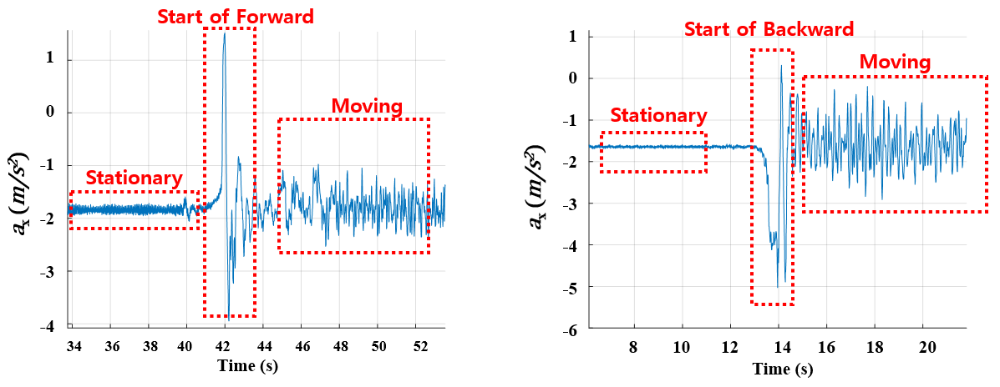
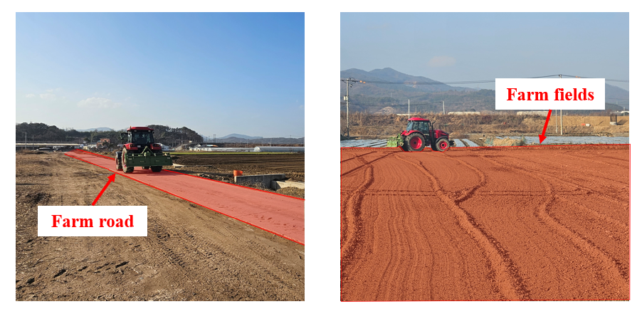
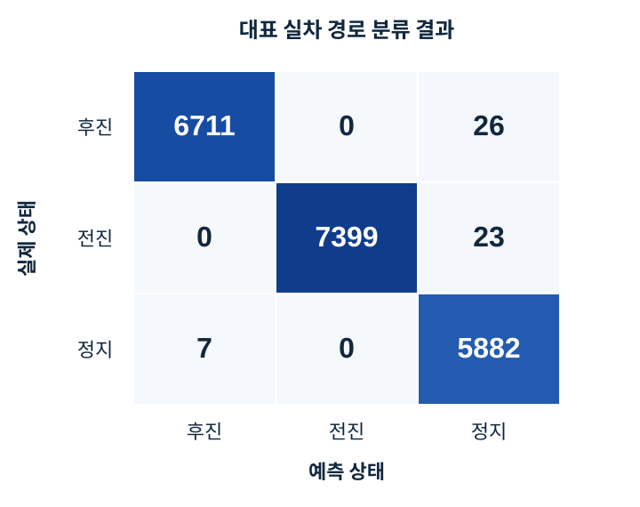
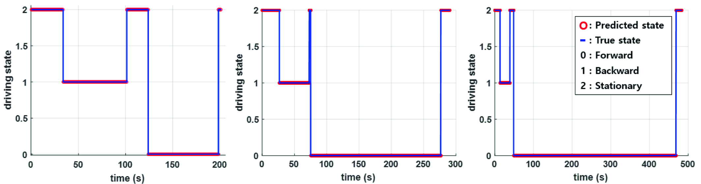

기어, 브레이크와 CAN 정보를 직접 사용하지 않고 외부 IMU만으로 상태 판별
과학기술정보통신부 국가 R&D, OFF-ROAD NAVIGATION
IMU 기반 LSTM-FSM 주행상태 판별
기어, 브레이크와 차량 CAN 신호를 직접 사용하지 않는 반자율주행 트랙터에서 IMU 시계열만으로 전진, 후진, 정지를 판별했습니다. LSTM이 상태전환 패턴을 찾고 FSM이 순간 오분류가 실제 상태 변경으로 이어지지 않도록 보완한 주행상태 판별 모듈입니다.
- 입력
- IMU 3축 가속도, 3축 각속도
- 담당
- LSTM 학습, FSM 설계, ROS 통합, 실차검증
- 실증
- 반자율주행 농기계, 세 실차 경로
- 성과
- 평균 후진 F1-score 99.52%, SCIE 공동저자
01 / CONSTRAINT
판별이 필요한 이유
항법 시스템은 초기 진행방향을 정렬하고 정지 시 보정을 수행하려면 차량이 전진, 후진, 정지 중 어느 상태인지 알아야 했습니다. 그러나 반자율주행 트랙터에서는 기어, 브레이크와 같은 차량 내부 신호를 사용할 수 없었고, 농지의 진동과 슬립 때문에 단순 임계값으로 상태를 안정적으로 구분하기 어려웠습니다. 추가 센서 없이 기존 IMU만으로 세 상태를 판별하는 것을 목표로 했습니다.
시스템 변경과 센서 추가 없이 기존 관성 센서 데이터 활용
노면 조건에 따라 센서 신호와 임계값 기반 판정이 흔들림
정상 주행 구간의 한 시점 데이터만으로 진행방향 구분 곤란
02 / OBSERVATION
상태전환에서 찾은 단서

- 등속 구간가속도와 각속도 파형의 중첩으로 방향 판별 근거 부족
- 출발 구간전진 시작과 후진 시작의 x축 가속도 부호 차이 확인
- 문제 재정의현재 파형 분류가 아닌 상태전환 시퀀스 인식으로 전환
03 / DESIGN
LSTM-FSM 결합

전진과 후진은 등속 구간의 파형만으로 구분하기 어렵다. LSTM이 출발 순간의 시간 패턴을 찾고, FSM이 그 이벤트를 이후의 지속 상태로 유지하도록 역할을 분리했다.
비교 모델인 SVM과 RF는 FSM 없이 사용했을 때 후진 F1-score가 약 10–37%에 머물렀지만, FSM을 결합하면 98% 이상으로 개선됐습니다. 순간 분류 결과뿐 아니라 이전 상태와 상태전환 조건을 함께 보는 구조가 중요하다는 것을 확인했습니다.
04 / FIELD TEST
실차 실험


05 / CLASSIFICATION
주행상태 판별 결과
99.52%
세 검증 경로 평균 후진 F1-score
전진, 후진과 정지가 반복되는 실차 경로에서 LSTM-FSM 주행상태 판별 성능 검증


논문에 수록된 세 실차 경로의 후진 F1-score를 산술평균한 값.
06 / OWNERSHIP
담당 범위
전체 항법 시스템 중 주행상태 판별 알고리즘을 담당했습니다.
- 데이터IMU 데이터 전처리, 시퀀스 구성과 주행상태 라벨링
- 모델LSTM 모델 구성과 학습, 비교 분류 결과 분석
- 판단LSTM 예측과 이전 상태를 결합하는 FSM 전환 규칙 설계
- 통합ROS 기반 실시간 데이터 파이프라인과 주행상태 출력 연동
- 검증농로와 농지에서 실차 시험, 분류 결과 및 오분류 구간 분석
07 / OUTPUT
관련 연구 성과
Measurement 278
(2026) 121679A novel navigation system using driving state classification algorithm for semi-autonomous tractors공동저자 4/6
(2026) 121679A novel navigation system using driving state classification algorithm for semi-autonomous tractors공동저자 4/6
ICROS 2024주행상태 판별 알고리즘 기반 반자율 트랙터 항법 연구구두발표, 공동저자 2/5